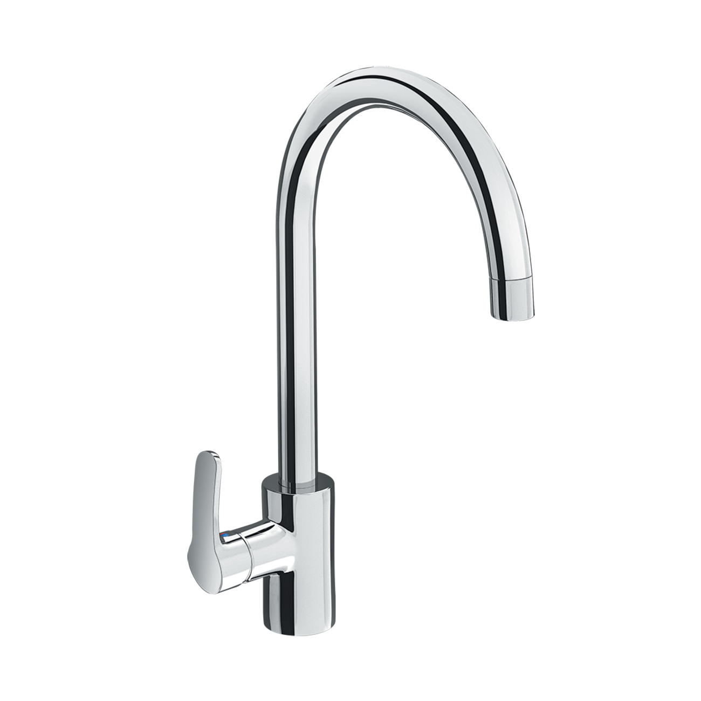
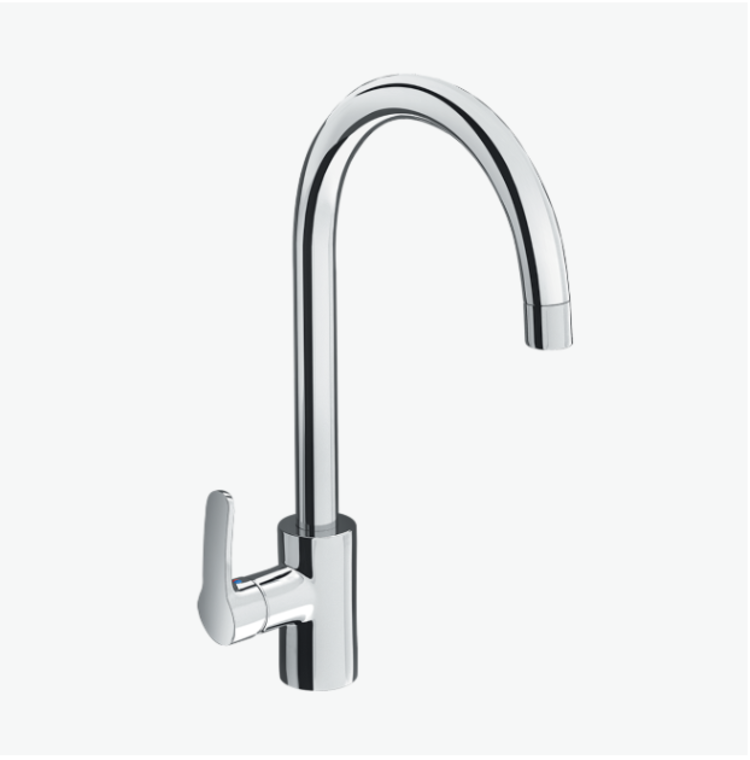
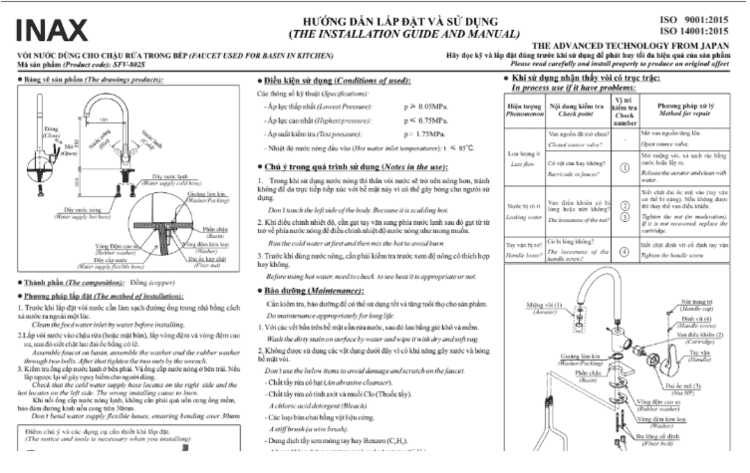

Vòi bếp INAX SFV-802S được thiết kế để nâng cao hiệu suất và trải nghiệm nấu nướng của bạn. Sản phẩm này không chỉ mang đến sự tiện nghi của nước nóng lạnh mà còn đảm bảo các tiêu chuẩn cao nhất về vệ sinh, độ bền và thiết kế thông minh, xứng đáng là trợ thủ đắc lực trong căn bếp hiện đại.Thiết kế SFV-802S thông minh, tối ưu hóa không gianVòi bếp SFV-802S sở hữu thiết kế cổ ngỗng cao, một kiểu dáng vừa thẩm mỹ vừa mang lại nhiều lợi ích thực tế như:Chống bắn nước hiệu quả: Dạng cổ ngỗng giúp dòng nước chảy thẳng và sâu vào bồn rửa chén, hạn chế tối đa tình trạng nước bị bắn ra ngoài, giữ cho khu vực bếp luôn khô ráo và sạch sẽ.Xoay 360 độ linh hoạt: Vòi có khả năng xoay dễ dàng giữa 2 bồn rửa, lý tưởng cho các loại chậu rửa đôi. Tính năng này mang lại sự linh hoạt tuyệt đối khi sơ chế thực phẩm, rửa chén bát hoặc vệ sinh bồn rửa.Thao tác nhanh chóng: Tay gạt êm ái giúp bạn nhanh chóng điều chỉnh nhiệt độ và lưu lượng nước, tối ưu hóa thời gian đứng bếp.Chất lượng và độ bền vượt trộiVòi bếp SFV-802S được làm từ đồng thau cao cấp, một vật liệu không chỉ bền chắc mà còn không gây nhiễm khuẩn cho nước, đảm bảo nguồn nước sử dụng để nấu ăn và rửa thực phẩm luôn an toàn cho sức khỏe gia đình bạn.Ngoài ra, sản phẩm còn được trang bị đầu phun bọt, làm mềm dòng nước khi chảy ra, giúp chống bắn hiệu quả và tạo cảm giác dễ chịu khi rửa tay hoặc rửa chén.Công nghệ tiên tiến, cốt lõi Nhật BảnSản phẩm được hoàn thiện bằng công nghệ tiên tiến, đảm bảo khả năng hoạt động ổn định trong hơn một thập kỷ với các công nghệ tích hợp sau:Van sứ chống rò rỉ: Van điều khiển bằng sứ nổi tiếng với độ bền cao và khả năng chống mài mòn vượt trội. Cấu tạo kín khít giúp vòi chống rò rỉ nước tuyệt đối, mang lại tuổi thọ trên 10 năm và tiết kiệm chi phí bảo trì.Lớp mạ cao cấp: Bề mặt vòi được phủ lớp mạ Crom-Niken sáng bóng, chống ăn mòn hiệu quả, giữ cho vòi luôn mới mẻ dù phải chịu đựng dầu mỡ và chất tẩy rửa thường xuyên trong căn bếp.Bên cạnh đó, sản phẩm còn có thiết kế thông minh giúp việc lắp đặt vòi trở nên đơn giản, bạn có thể nhanh chóng đưa vòi vào sử dụng.Nhìn chung, vòi bếp nóng lạnh INAX SFV-802S là một sự đầu tư xứng đáng cho bất kỳ căn bếp nào, mang lại sự tiện nghi, an toàn và một vẻ đẹp bền vững.Hướng dẫn lắp đặt và sử dụng vòi chậu rửa ở bếp SFV-802SFile hướng dẫn lắp đặt sản phẩmUser manual_UM-0022_SFV-802S_V2_2020Sep24.pdfThông số kỹ thuậtTên sản phẩmVòi bếp SFV-802SChất liệu- Chất liệu đồng thau không gây nhiễm khuẩn cho nước. - Mạ Crom-NikenKích thước192 x 370mm (Cao x Rộng)Tính năng- Tay gạt êm ái, giúp nước nhanh chóng chảy ra và dễ dàng điều chỉnh nhiệt. - Tuổi thọ trên 10 năm. - Phun bọt chống bắn.Thương hiệuINAXThiết kế- Dạng cổ ngỗng giúp nước không bị bắn ra ngoài - Có thể xoay dễ dàng giữa hai bồn rửa - Dễ dàng lắp đặtKhác- Hotline tư vấn và bảo hành: 18006633
Vòi bếp SFV-802S
Vòi bếp thương hiệu INAX.
Đã cập nhật danh sách yêu thích.
DANH MỤC: Vòi bếp
MÃ SẢN PHẨM: SFV-802S
DEPTH: 0mm
HEIGHT: 192mm
WIDTH: 370mm
Vòi bếp INAX SFV-802S được thiết kế để nâng cao hiệu suất và trải nghiệm nấu nướng của bạn. Sản phẩm này không chỉ mang đến sự tiện nghi của nước nóng lạnh mà còn đảm bảo các tiêu chuẩn cao nhất về vệ sinh, độ bền và thiết kế thông minh, xứng đáng là trợ thủ đắc lực trong căn bếp hiện đại.Thiết kế SFV-802S thông minh, tối ưu hóa không gianVòi bếp SFV-802S sở hữu thiết kế cổ ngỗng cao, một kiểu dáng vừa thẩm mỹ vừa mang lại nhiều lợi ích thực tế như:Chống bắn nước hiệu quả: Dạng cổ ngỗng giúp dòng nước chảy thẳng và sâu vào bồn rửa chén, hạn chế tối đa tình trạng nước bị bắn ra ngoài, giữ cho khu vực bếp luôn khô ráo và sạch sẽ.Xoay 360 độ linh hoạt: Vòi có khả năng xoay dễ dàng giữa 2 bồn rửa, lý tưởng cho các loại chậu rửa đôi. Tính năng này mang lại sự linh hoạt tuyệt đối khi sơ chế thực phẩm, rửa chén bát hoặc vệ sinh bồn rửa.Thao tác nhanh chóng: Tay gạt êm ái giúp bạn nhanh chóng điều chỉnh nhiệt độ và lưu lượng nước, tối ưu hóa thời gian đứng bếp.Chất lượng và độ bền vượt trộiVòi bếp SFV-802S được làm từ đồng thau cao cấp, một vật liệu không chỉ bền chắc mà còn không gây nhiễm khuẩn cho nước, đảm bảo nguồn nước sử dụng để nấu ăn và rửa thực phẩm luôn an toàn cho sức khỏe gia đình bạn.Ngoài ra, sản phẩm còn được trang bị đầu phun bọt, làm mềm dòng nước khi chảy ra, giúp chống bắn hiệu quả và tạo cảm giác dễ chịu khi rửa tay hoặc rửa chén.Công nghệ tiên tiến, cốt lõi Nhật BảnSản phẩm được hoàn thiện bằng công nghệ tiên tiến, đảm bảo khả năng hoạt động ổn định trong hơn một thập kỷ với các công nghệ tích hợp sau:Van sứ chống rò rỉ: Van điều khiển bằng sứ nổi tiếng với độ bền cao và khả năng chống mài mòn vượt trội. Cấu tạo kín khít giúp vòi chống rò rỉ nước tuyệt đối, mang lại tuổi thọ trên 10 năm và tiết kiệm chi phí bảo trì.Lớp mạ cao cấp: Bề mặt vòi được phủ lớp mạ Crom-Niken sáng bóng, chống ăn mòn hiệu quả, giữ cho vòi luôn mới mẻ dù phải chịu đựng dầu mỡ và chất tẩy rửa thường xuyên trong căn bếp.Bên cạnh đó, sản phẩm còn có thiết kế thông minh giúp việc lắp đặt vòi trở nên đơn giản, bạn có thể nhanh chóng đưa vòi vào sử dụng.Nhìn chung, vòi bếp nóng lạnh INAX SFV-802S là một sự đầu tư xứng đáng cho bất kỳ căn bếp nào, mang lại sự tiện nghi, an toàn và một vẻ đẹp bền vững.Hướng dẫn lắp đặt và sử dụng vòi chậu rửa ở bếp SFV-802SFile hướng dẫn lắp đặt sản phẩmUser manual_UM-0022_SFV-802S_V2_2020Sep24.pdfThông số kỹ thuậtTên sản phẩmVòi bếp SFV-802SChất liệu- Chất liệu đồng thau không gây nhiễm khuẩn cho nước. - Mạ Crom-NikenKích thước192 x 370mm (Cao x Rộng)Tính năng- Tay gạt êm ái, giúp nước nhanh chóng chảy ra và dễ dàng điều chỉnh nhiệt. - Tuổi thọ trên 10 năm. - Phun bọt chống bắn.Thương hiệuINAXThiết kế- Dạng cổ ngỗng giúp nước không bị bắn ra ngoài - Có thể xoay dễ dàng giữa hai bồn rửa - Dễ dàng lắp đặtKhác- Hotline tư vấn và bảo hành: 18006633
DANH MỤC: Vòi bếp
MÃ SẢN PHẨM: SFV-802S
DEPTH: 0mm
HEIGHT: 192mm
WIDTH: 370mm